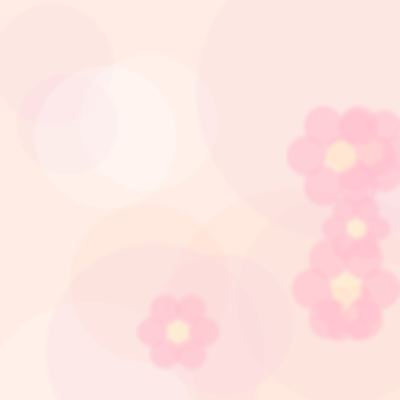
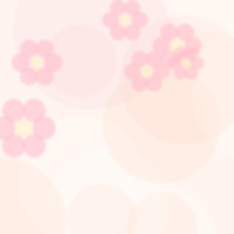
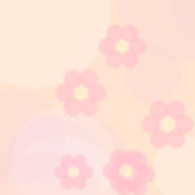

☀ Sun Nails
Солнечный маникюр — блистай, ты прекрасна
Сторис

✨ Новинки сезонаСмотреть ›

🌸 Нежный френчСмотреть ›

🍑 Персики и золотоСмотреть ›

🌅 Утренний лайтСмотреть ›

💎 Блеск и шиммерСмотреть ›
Листайте ленту — и нажмите на квадратик, чтобы посмотреть сторис
Наши работы
Персиковый рассвет
Нежные персиковые тона и цветочные мотивы — идеальны для тёплого настроения каждый день.
Смотреть работу ›Акварельная дымка
Полупрозрачные пастельные переливы — лёгкий и воздушный дизайн для особого образа.
Смотреть работу ›Весеннее цветение
Веточка сакуры на молочном фоне — самый нежный маникюр этой весны.
Смотреть работу ›